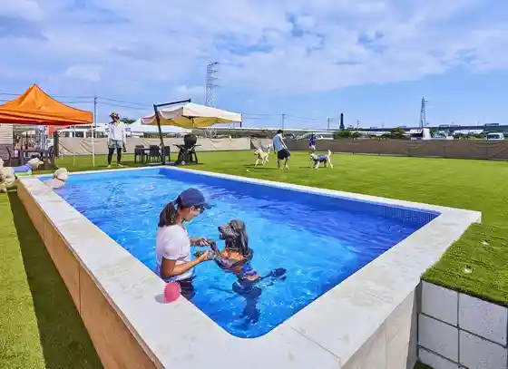
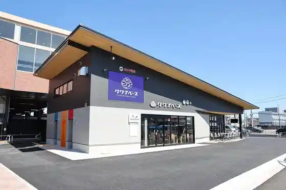
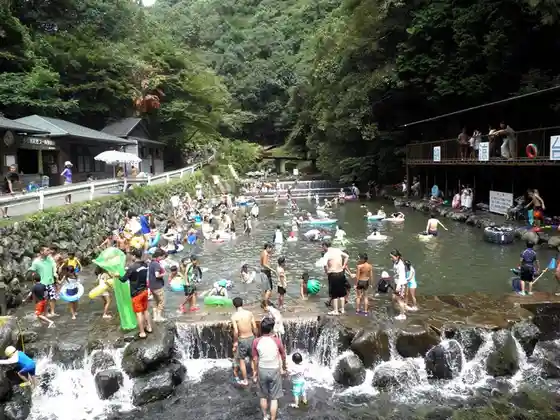
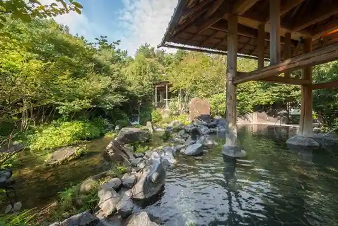

ROSA FIFLD
Kuwana, Mie · 090-9191-6363 · Official / source link

Jonan Shrine
Kuwana, Mie · 0594-23-2638 · Official / source link
Kuwanabesu
Kuwana, Mie · 0594-21-5416 · Official / source link

Tado Kyo Tennen Puru
Kuwana, Mie · 0594-48-2702 · Official / source link

Nagashima Onsen (Yu Ami no Shima) Nagashima Spa "Yuami no Shima"
Kuwana, Mie · 0594-45-1111 · Official / source link

Nagashimasupa Land Nagashima Spaland
Kuwana, Mie · 0594-45-1111 · Official / source link
Nagashima Jambo Kaisui Puru
Kuwana, Mie · 0594-45-1111 · Official / source link
Kuwana Castle Ruins Kyuka Park
Kuwana, Mie · 0594-21-5416 · Official / source link
Hana Hiroba Nabana Village (Haru)
Kuwana, Mie · 0594-41-0787 · Official / source link
Sakura Namiki Nabana Village (Someiyoshi no)
Kuwana, Mie · 0594-41-0787 · Official / source link
Tado Taisha
Kuwana, Mie · 0594-48-2037 · Official / source link
Saikurusuteshon | Nagashima Farm
Kuwana, Mie · 0594-45-0321 · Official / source link
Nagashima Farm (Nippon De Yuiitsu Jurei 2000 Nen no Oriibu Taiju)
Kuwana, Mie · 0594-45-0321 · Official / source link
Tennen Onsen Kuahausu Nagashima
Kuwana, Mie · 0594-45-1122 · Official / source link
Ando Shokuhin Sanpuru Seisakusho
Kuwana, Mie · 0594-84-7355 · Official / source link
Nabana Village Begonia Garden
Kuwana, Mie · 0594-41-0787 · Official / source link
Hamaguri Plaza
Kuwana, Mie · 0594-22-6010 · Official / source link
BLUEGRASS Gorufukosu Nagashima
Kuwana, Mie · 0594-37-6951 · Official / source link
Nabana Village
Kuwana, Mie · 0594-41-0787 · Official / source link
Akasu Ga Jinmei Sha
Kuwana, Mie · 0594-24-1231 · Official / source link
Roku Hana En
Kuwana, Mie · 0594-24-4466 · Official / source link
Nagoya Anpanman Kodomo Museum & Park
Kuwana, Mie · 0594-45-8877 · Official / source link
Tama San Inari Shrine
Kuwana, Mie · 0594-22-0191 · Official / source link
Kangaku Tera
Kuwana, Mie · 0594-24-1231 · Official / source link
Joba Club Kurein Tokai
Kuwana, Mie · 0594-45-0850 · Official / source link
Shoju Tera
Kuwana, Mie · 0594-22-5596 · Official / source link
Shichiri no Watari Ato
Kuwana, Mie · 0594-24-1361 · Official / source link
Tado Guriin Farm
Kuwana, Mie · 0594-48-7447 · Official / source link
(Sato Baths) Nabana Village
Kuwana, Mie · 0594-41-0787 · Official / source link
Kuwana Sosha (Kasuga Shrine)
Kuwana, Mie · 0594-22-1913 · Official / source link
Daifuku Ta Tera
Kuwana, Mie · 0594-22-0199 · Official / source link
Kami Kan Shrine
Kuwana, Mie · 0594-22-7863 · Official / source link
Chinkoku Shukoku Shrine
Kuwana, Mie · 0594-22-2238 · Official / source link
Tado Yama
Kuwana, Mie · 0594-24-1231 · Official / source link
Mitsui Autoretto Park Jazudoriimu Nagashima
Kuwana, Mie · 0594-45-8700 · Official / source link
Masuda Shrine
Kuwana, Mie · 0594-73-2788 · Official / source link
Higashimeihan Jidoshado (Oyamada Parking Area) Kudari Sen
Kuwana, Mie · 059-24-7055 · Official / source link
Token Tado Kantorii Club Nagoya
Kuwana, Mie · 0594-48-5811 · Official / source link
Kuwana Museum
Kuwana, Mie · 0594-21-3171 · Official / source link
Wangan Nagashima PA Ashiyu
Kuwana, Mie · 0594-45-8585 · Official / source link
Kakiyasu Komyunitei Park (Yoshiyuki Maru Komyunitei Park)
Kuwana, Mie · Official / source link
Tado Yamagami Park
Kuwana, Mie · 0594-24-1231 · Official / source link
Moroto Shi Garden
Kuwana, Mie · 0594-25-1004 · Official / source link
Ishidori Hall
Kuwana, Mie · 0594-24-6085 · Official / source link
Hojo Tera
Kuwana, Mie · 0594-22-1154 · Official / source link
Waju no Sato
Kuwana, Mie · 0594-42-0001 · Official / source link
Shogen Tera
Kuwana, Mie · 0594-22-3924 · Official / source link
Kaizo Tera
Kuwana, Mie · 0594-22-3274 · Official / source link
Kita Kuwana Soja (Kita Kuwana Shrine)
Kuwana, Mie · 0594-23-4362 · Official / source link
Bi Shika no Jinmei Sugi
Kuwana, Mie · 0594-24-1231 · Official / source link
Tado no Inunashi Jisei Chi
Kuwana, Mie · 0594-24-1231 · Official / source link
Tayu no Dai Kusu
Kuwana, Mie · 0594-24-1361 · Official / source link
Yada Tachiba
Kuwana, Mie · 0594-24-1231 · Official / source link
Moroto Suido Chosuichi Iko
Kuwana, Mie · 0594-24-1361 · Official / source link
Takatsuka Yama Burial Mound
Kuwana, Mie · 0594-24-1361 · Official / source link
Kako to Kuhi
Kuwana, Mie · 0594-24-1361 · Official / source link
Choen Tera
Kuwana, Mie · 0594-22-2853 · Official / source link
Sumiyoshi Ura
Kuwana, Mie · 0594-24-1361 · Official / source link
Kuroganemochi
Kuwana, Mie · 0594-24-1361 · Official / source link
Tenmu Tenno Sha
Kuwana, Mie · 0594-24-1231 · Official / source link
Shirauo Tsuka (Hama no Jizo)
Kuwana, Mie · 0594-21-5416 · Official / source link
Hama no Jizo (Ryufuku Tera)
Kuwana, Mie · 0594-21-5416 · Official / source link
Heguri Shrine
Kuwana, Mie · 0594-24-1231 · Official / source link
Kuwana Betsuin Hon to Tera
Kuwana, Mie · 0594-22-0652 · Official / source link
Moroto (Shu) Ie House Omoya Yoshitsu Goten Yokan Tama Totsu Ba Renga Kura Omotemon
Kuwana, Mie · 0594-24-1361 · Official / source link